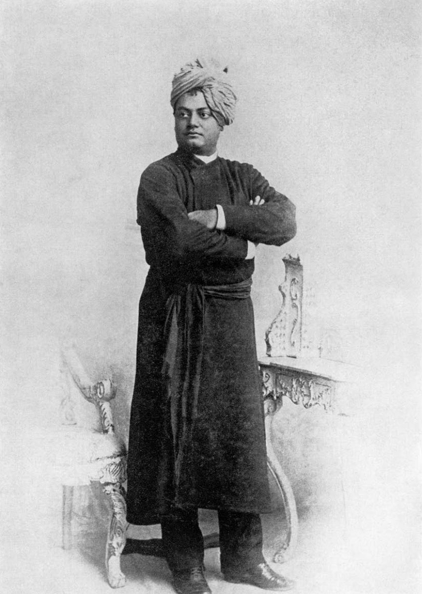

Swami Vivekananda
Arise, awake and stop not till the goal is reached

The Potrait of Swami Vivekananda
National youth day is celebrated in India on 12th January to commemorate the birth date of Swami Vivekananda, one of the most inspiring and prudent human beings.Who introduced Hinduism by addressing, “Brothers and Sisters of America” In the parliament of World religions in Chicago in 1893. He was a firm believer of “We are what our thoughts have made us, so take care of what you think”. He was the chief disciple of 19th century Indian mystic Ramakrishna Paramhansa and founder of Ramakrishna Math and Ramakrishna Mission.
Time Line
- 1863 — Birth of Swami Vivekananda, born on January 12, Monday, in Calcutta.
- 1869 — age 6, started education in pathshala
- 1880 — joined Presidency College in January, Arts section.
- 1881 — passed FA examination (Higher Secondary, Class XII) from Scottish Church College. Continued his BA studies in same institution.
- 1881 — December –first great meeting with the Master Ramkrishna Paramahamsa, when he went to Dakshineswar with a friend.
- 1884 — January, passed Bachelor of Arts examination from Scottish Church college. Had philosophy as one subject, also logic.
- 1886 — Around this time first experience of Nirvikalpa Samadhi.
- 1891–1892 — journey completely alone as wandering monk for 2 years,
- 1893 — Leaves Bombay for Chicago on May 31, 1893.
- 1893 — September11 – opening session of Parliament of religions. Opening speech.
- 1897 — May1 –Ramakrishna mission formed in Calcutta.
- 1902 — Friday, July 4, dies
Achivements
- He proved Hinduism is not a bundle of blind beliefs.
- He proved that Hinduism has taught the world tolerance and acceptance.
- He proved that along with the faith in God we should work hard to achieve our goal.
- He taught us to believe in ourselves.
- He taught us to be rational, logical and practical.
- He taught us to work unselfishly
- He sh owed us the path to salvation.
- He preached the idea of science and sprituiality are opposite side of a same coin